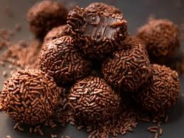

A feijoada foi criada pelos escravos com os restos dos porcos que os Portugueses se alimentavam.

A história do chimarrão começa com os povos indígenas Guaranis, que já consumiam a erva-mate como bebida revigorante antes da chegada dos europeus.

A história do brigadeiro remonta a 1945, durante a campanha presidencial do Brigadeiro Eduardo Gomes, quando a doceira carioca Heloísa Nabuco criou o doce para arrecadar fundos para o candidato.